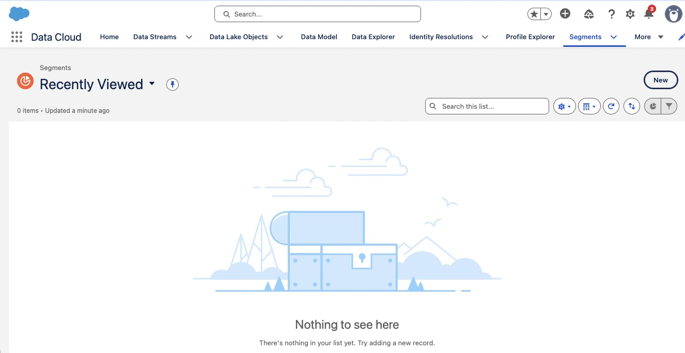

NTO Rewards Context
The Scenario: NTO's marketing team needs to create targeted campaigns for different loyalty member groups. Rather than sending the same message to all 500K members, they want to personalize based on member behavior, tier status, and engagement trail participation.
Your Challenge: Build three high-value segments for NTO: New Members (for welcome campaigns), Gold Tier Members (for VIP offers), and Spring Challenge Eligible members (for engagement trail promotions). You'll use Segment Builder to create dynamic audiences that refresh automatically.
🎯 What You'll Learn
Segment Builder
How to create dynamic audiences using Data Cloud attributes
Attribute Library
Navigating DMOs and fields for segmentation criteria
Rule Groups & Logic
Building complex segments with AND/OR logic
Activation & Publishing
Publishing segments and scheduling refreshes
Understanding Segmentation
Required • 30 minutes
The Five Key Concepts
Segmentation is the foundation of targeted marketing in MC Next. Let's understand how to find the right audiences:
Segment Builder
Segment Builder is the visual interface for creating audiences in Data Cloud. It allows you to:
- Filter: Select records based on attribute values (e.g., Tier = "Gold")
- Combine: Use multiple criteria with AND/OR logic
- Preview: See count and sample records before publishing
- Publish: Make the segment available to MC Next for campaigns
Attribute Library
The Attribute Library shows all available DMO fields you can segment on. For NTO, this includes:
- Individual DMO: FirstName, LastName, Email, City, State
- Loyalty Program Member DMO: MemberTier, PointsBalance, EnrollmentDate, MemberStatus
- Loyalty Promotion Enrollment DMO: PromotionName, EnrollmentDate, Status
Rule Groups (AND vs OR Logic)
Rule Groups let you combine multiple criteria:
AND Logic: All conditions must be true
Result: Only Gold members with more than 5000 points
OR Logic: Any condition can be true
Result: Gold members OR anyone with 10K+ points (even if Bronze/Silver)
Publishing & Activation
Before a segment can be used in campaigns, it must be published and activated:
- Published: Segment calculation runs and generates member list
- Activated: Segment is available in MC Next for flows and journeys
- Refresh Schedule: How often segment recalculates (hourly, daily, weekly)
Nested Segments
You can use existing segments as criteria for new segments:
Example: Create a "High-Value Gold Members" segment that includes:
- Members in the "Gold Tier Members" segment (existing)
- AND PointsBalance > 10000
- AND Last Purchase within 30 days
This creates segment hierarchies for more sophisticated targeting.
Build Three NTO Member Segments
Hands-on • 60 minutes
🎯 Your Mission
Create three segments that NTO's marketing team will use for targeted campaigns. Each segment serves a different purpose in the customer journey.
- Build "New Members" segment (enrolled within 30 days)
- Build "Gold Tier Members" segment (top-tier members)
- Build "Spring Challenge Eligible" segment (complex criteria)
- Preview each segment and verify member counts
📋 Step-by-Step Instructions
Navigate to Segment Builder
From Data Cloud, click on Segments in the left navigation.
Click the New button to create your first segment.

Segment Builder with New button highlighted
Create "New Members" Segment
After clicking New, the New Segment dialog appears. Complete it as follows:
- Select Use a Visual Builder.
- Select Standard Segment.
- Click Next.
- Segment On: select Profile Object → Loyalty Program Member.
- Segment Name:
New Members - Description:
Members enrolled within the last 30 days - Click Next, accept the defaults (Standard Push and Do Not Schedule), then click Save to open the segment canvas.

New Segment dialog: Use a Visual Builder + Standard Segment, Segment On = Loyalty Program Member
Add the filter criteria:
- DMO: Loyalty Program Member
- Field: EnrollmentDate
- Operator: Last Number Of Days
- Value: 30

Segment criteria showing enrollment date within 30 days
Click Preview to see the member count. You should see approximately 50,000 members.
The segment is saved when you complete the dialog above. We'll publish it in Lab 2.
Create "Gold Tier Members" Segment
Click New again to create a second segment, then complete the New Segment dialog:
- Select Use a Visual Builder.
- Select Standard Segment.
- Click Next.
- Segment On: select Profile Object → Loyalty Program Member.
- Segment Name:
Gold Tier Members - Description:
All Gold tier loyalty members - Click Next, accept the defaults (Standard Push and Do Not Schedule), then click Save to open the segment canvas. (See the note in Step 2 on why we don't schedule in training.)
Criteria (Tier — via the related Loyalty Member Tier DMO):
- Select Attributes.
- Under Related Data Model Objects, select Loyalty Member Tier.
- Drag Name onto the canvas.
- Set the Operator to Is Equal To.
- Set the Value to Gold Tier.

Gold Tier segment: Loyalty Member Tier → Name Is Equal To "Gold Tier"
Preview the segment. You should see approximately 75,000 Gold members.
Click Save.
Create "Spring Challenge Eligible" Segment (Complex)
Now let's build a more complex segment with multiple rule groups.
Click New, then complete the New Segment dialog:
- Select Use a Visual Builder.
- Select Standard Segment.
- Click Next.
- Segment On: select Profile Object → Loyalty Program Member.
- Segment Name:
Spring Challenge Eligible - Description:
Members eligible for Spring Hiking Challenge engagement trail - Click Next, accept the defaults (Standard Push and Do Not Schedule), then click Save to open the segment canvas. (See the note in Step 2 on why we don't schedule in training.)
Eligibility Requirements:
- Must be Silver Tier OR Gold Tier (not Bronze Tier)
- AND NOT already enrolled in "Spring Hiking Challenge" promotion
Rule Group 1 (Tier — OR logic, via the related Loyalty Member Tier DMO):
- Select Attributes.
- Under Related Data Model Objects, select Loyalty Member Tier.
- Drag Name onto the canvas, set the Operator to Is Equal To, and set the Value to Silver Tier.
- Add an OR condition on Name Is Equal To Gold Tier.
Rule Group 2 (Exclude already enrolled — AND NOT logic):
- Navigate to Loyalty Promotion Enrollment related DMO
- PromotionName Not Equals "Spring Hiking Challenge"

Complex segment with OR logic for tiers and exclusion criteria
Preview the segment. You should see approximately 120,000 eligible members.
Click Save.
🎉 Lab 1 Checkpoint
Before moving to Lab 2, verify you have:
- ✓ Created three saved segments
- ✓ Previewed each segment and seen realistic member counts
- ✓ Used both simple and complex rule group logic
- ✓ Navigated across multiple DMOs (Loyalty Member + Promotion Enrollment)
Publish Segments & Configure Activation
Hands-on • 30 minutes
🎯 Your Mission
Take your saved segments and publish them so they're available in MC Next for campaigns. Configure refresh schedules appropriate for each use case.
- Publish all three segments
- Configure appropriate refresh schedules
- Activate segments for MC Next consumption
- Verify segments appear in Flow Builder
📋 Step-by-Step Instructions
Publish "New Members" Segment
From the Segments list, click on New Members.
Click the Publish button.
Publishing Configuration:
- Refresh Schedule: Daily at 6:00 AM
- Reason: New member enrollments happen throughout the day, but daily refresh is sufficient for welcome campaigns

Publish dialog with daily refresh schedule selected
Click Publish. The segment will begin calculating. This may take 5-10 minutes for 50K members.
Publish "Gold Tier Members" Segment
Click on Gold Tier Members and click Publish.
Publishing Configuration:
- Refresh Schedule: Weekly on Mondays at 3:00 AM
- Reason: Tier changes don't happen frequently (usually quarterly), so weekly refresh is sufficient

Weekly refresh schedule for stable segment
Click Publish.
Publish "Spring Challenge Eligible" Segment
Click on Spring Challenge Eligible and click Publish.
Publishing Configuration:
- Refresh Schedule: Daily at 8:00 AM
- Reason: As members enroll in the trail, they should be excluded from future invitations. Daily refresh ensures accurate targeting.
Click Publish.
Once published, click on the segment to view results:

Published segment showing 120,342 members with preview of sample records
You should see:
- Total member count (e.g., 120,342)
- Last refresh timestamp
- Sample records (first 10 members with names, tiers, points)
Verify Segments in MC Next
Now let's verify these segments are available in MC Next.
Navigate to Marketing Cloud Next from the App Launcher.
Go to Flows and create a new flow (we'll delete this - just testing).
Add a Segment Trigger element.
In the segment picker, you should see all three segments:
- New Members
- Gold Tier Members
- Spring Challenge Eligible
Discard the test flow - we were just verifying activation.
🎉 Lab 2 Checkpoint
Verify you understand:
- ✓ How to publish a segment
- ✓ How to configure refresh schedules (and why different schedules matter)
- ✓ How to verify segments are available in MC Next
- ✓ How to view segment results and member counts
Advanced Segmentation Strategies
Optional • 30 minutes
Calculated Insights (Aggregate Metrics)
Calculated Insights allow you to segment based on aggregate metrics like "Total purchases in last 90 days" or "Average points earned per month".
Example Use Case: Create a "Frequent Shoppers" segment
- Create Calculated Insight:
TotalPurchases_90Days - Formula: COUNT(Orders) WHERE OrderDate >= TODAY() - 90
- Use in segment: TotalPurchases_90Days >= 5
Nested Segments for Hierarchy
Build segment hierarchies for more sophisticated targeting:
- Base Segment: "Active Members" (MemberStatus = Active)
- Tier Segments: "Active Bronze", "Active Silver", "Active Gold" (include "Active Members" + tier filter)
- Behavior Segments: "High-Value Gold" (include "Active Gold" + purchase criteria)
Benefit: If you update the base "Active Members" definition, all child segments inherit the change.
Refresh Strategy Considerations
Hourly Refresh
Use when: Real-time data is critical (abandoned cart, real-time event triggers)
Cost: Higher compute consumption
Example: "Cart Abandoned - Last Hour" segment for immediate recovery emails
Daily Refresh
Use when: Daily campaign cadence (morning batch sends)
Cost: Moderate compute consumption
Example: "New Members", "Birthday Today" segments
Weekly Refresh
Use when: Data changes slowly (tier assignments, demographic changes)
Cost: Low compute consumption
Example: "Gold Members", "Inactive Members (90+ days)"
Multi-Object Segmentation
Advanced segments can span multiple DMOs with relationship traversal:
- Individual → Loyalty Program Member → Loyalty Ledger
- Filter on ledger transactions: "Members who redeemed points in last 30 days"
- Aggregate: SUM(PointsRedeemed) WHERE TransactionDate >= TODAY() - 30 > 1000
Performance Optimization Tips
- Use indexed fields: Common filters like MemberTier, MemberStatus are indexed for fast queries
- Avoid excessive relationship traversal: More than 3 DMO hops can slow segment calculation
- Use calculated insights for complex aggregations: Pre-calculate aggregate metrics rather than computing on-the-fly in segments
- Schedule refreshes during off-peak hours: 2-6 AM for best performance
For Implementation Teams
Optional • 15 minutes
Discovery Questions for Segmentation Strategy
Why it matters: Data Cloud has segment limits (varies by SKU). Plan for segment hierarchy to reduce count.
Why it matters: Identify candidates for Calculated Insights (pre-compute complex aggregations).
Why it matters: Determines refresh schedule strategy and compute consumption.
Why it matters: Use nested segments to avoid duplication and maintain consistency.
Segment Naming Conventions
Establish a naming convention to keep segments organized as they grow:
Examples:
NTO - Loyalty - New Members
NTO - Loyalty - Gold Tier
NTO - Engagement - Trail Participants
NTO - Retention - At Risk (90 Days Inactive)
NTO - Reactivation - Lapsed (180+ Days)
Testing Segments Before Production Use
- Preview: Always preview segment before publishing
- Validate counts: Compare to expected audience size
- Sample records: Review first 10 records - do they match criteria?
- Test flow: Create a test flow targeting the segment (send to internal team first)
- Monitor first refresh: Check that refresh completes successfully
Common Pitfalls & Solutions
Pitfall: Segment returns zero members
Causes: Field mapping issue, data not synced, overly restrictive criteria
Solution: Remove criteria one-by-one to identify which is excluding all members
Pitfall: Segment refresh fails
Causes: Timeout (too complex), related DMO missing data, formula error
Solution: Simplify segment logic, check Data Cloud logs, verify all DMO relationships exist
Pitfall: Segment not appearing in MC Next
Causes: Not published, activation not complete, permission issue
Solution: Verify segment status = "Active", check user has MC Next access, wait 5 min for sync
Segment Lifecycle Management
- Archive unused segments: After campaign ends, deactivate segment to reduce compute
- Document segment purpose: Use description field to note which campaigns use the segment
- Annual segment audit: Review all segments, remove duplicates/unused
- Version control: If updating critical segment logic, create new version first (test before replacing production)
When to Escalate
- Performance issues: If segment refresh takes >2 hours, engage Data Cloud architect for optimization
- Complex calculated insights: For multi-DMO aggregations with custom formulas, consult with data team
- Real-time requirements: If hourly refresh isn't fast enough, consider streaming segments (requires architecture discussion)
Module 2 Quiz
5 minutes
Test your understanding before moving to Module 3:
1. What is the difference between AND and OR logic in segment rule groups?
2. Why use relative dates (like TODAY() - 30) instead of fixed dates?
3. What refresh schedule is most appropriate for a "Gold Tier Members" segment?
4. True or False: A segment must be both published AND activated to be available in MC Next.
🎉 Module 2 Complete!
Congratulations! You've mastered segmentation for NTO Rewards campaigns.
✅ What You Learned
- How to use Segment Builder to create dynamic audiences
- Navigating the Attribute Library across multiple DMOs
- Building complex segments with AND/OR/NOT logic
- Publishing segments and configuring refresh schedules
- Activating segments for MC Next consumption
🛠️ What You Built
- "New Members" segment (50K members, daily refresh)
- "Gold Tier Members" segment (75K members, weekly refresh)
- "Spring Challenge Eligible" segment (120K members, complex criteria)
- Published and activated all segments for campaigns